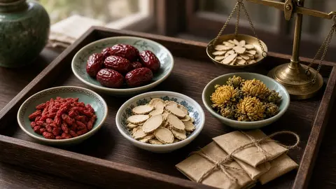
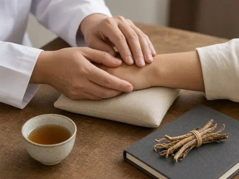
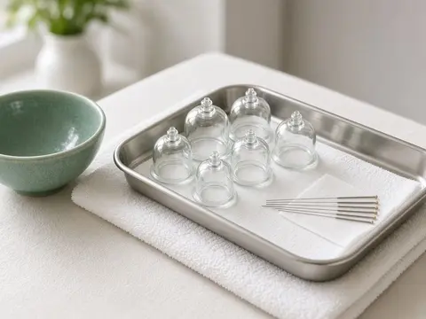

Chinatown · People’s Park Centre · TCM
Unhurried care,
the traditional way.
A small Chinese medicine clinic in the basement of People’s Park Centre — consultation and pulse diagnosis, herbal medicine and acupuncture. Open every day.
5.0 · 8 Google reviews

Care at Qi Lin
Look, listen, ask, feel — then treat.
Common TCM services are listed below. Please WhatsApp the clinic to confirm what is offered for your needs.
Consultation & pulse diagnosis
A detailed conversation about your health, sleep, digestion and cycle, with tongue and pulse observation in the TCM tradition.
Herbal medicine
Personalised herbal prescriptions. The clinic also retails health supplements — ask what is available.
Acupuncture
The treatment patients mention most in their reviews — for pain, tension and general wellbeing.
Cupping & tuina
Traditional body therapies that may be recommended alongside your plan. Please WhatsApp to confirm availability.


Patient voices
In patients’ own words.
Rated 5.0 from 8 Google reviews. Short excerpts quoted from those reviews.
“She is very kind, gentle, attentive & professional.”“Very good acupuncture doctor 👍”“She asked insightful questions, listened intently to my concerns, she also provides invaluable guidance on improving lifestyle habits.”“郭医师人很好，每次问诊都会问的很仔细”“Dr Guo is very kind, and asks in great detail at every consultation.” (translated)
“She improved my menstrual pain issues as well as my insomnia.”Reasons patients mention in reviews: period pain, insomnia, pre-pregnancy care, lower-back strain, general wellbeing. Individual results vary; TCM does not replace medical care where it is needed.
Visit
B1-19, People’s Park Centre
- Address
- 101 Upper Cross St, B1-19 People’s Park Centre, Singapore 058357
- Hours
- Daily · 11:00 am – 7:00 pm
- Phone / WhatsApp
- +65 8908 0502
- Getting here
- A short walk from Chinatown MRT. The clinic is on the basement level (B1).